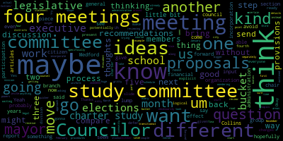
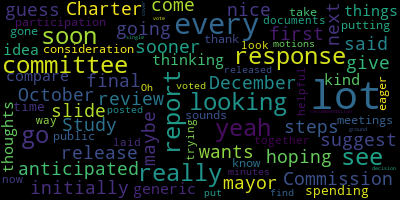
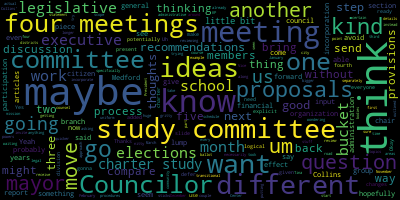
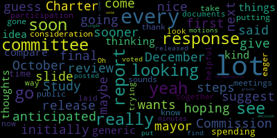

total time: 13.68 minutes
total words: 1956

total time: 6.95 minutes
total words: 1090

{kind=link}
total time: 1.75 minutes
total words: 248

{kind=link}
total time: 1.64 minutes
total words: 329

[Hurtubise]: Check my quarantine, check my quarantine.
[Tseng]: governance committee, October 9, 2024, paper 24-468, resolution to discuss updates to the city charter. This is... This is a meeting on just starting the whole charter review process from the city council's end. I've prepared some slides, basically going through what charter review is, what our role in it is, and what types of issues we'll be thinking about over the next few months. I've also invited the members of the Charter Study Committee to join our meeting as well, although these are two kind of different tracks of work. I'm going to share my slides. Give me one second. Great. Cool. So, What is the city charter? I'm not gonna go through everything in my slides, but I did compile a bunch of information from the call-in centers, presentations to the charter study committee, mass general law and the state constitution in the slide deck. I'm gonna send it out to everyone after. So we have one central place of information for the members of this committee and for the public to refer back to as well. That way, we don't have to pour through different Google Doc folders of information. Essentially, the city charter is our mini constitution. It creates our city as a legal entity. It establishes our city's powers, defines our government's operational structures, like creating local offices, distributing powers and responsibilities, et cetera. A little bit about our current charter. We have a modified plan A form of government. I put the definitions below. Essentially, the plan system's not really used anymore. Our city charter's also spread across documents, which is kind of a hassle and a bit of a problem, and it has not been comprehensively reviewed in decades. Some reasons for why we're doing, why the city, has been pursuing charter review, we want to be keeping up with a modern understanding of the best practices of local government, ensuring that our government's responsive to the needs and preferences of the current population, keeping consistent with changes in our state federal laws, values, cultural changes as well, clarifying any confusing or disputed text, and providing transparency on how we operate. You know, all of these reasons are why Charter Review is maybe one of the more exciting projects that we're working on this term. It's a very big picture project, and it's going to be all hands on deck. So, I think this part is important to let all of us know what the charter review process is like. There's essentially two main ways of doing charter review. One, I don't know if folks remember, the city council took a vote last term on a home rule petition to start the charter review process that passed 4-3 and the state legislature asked for five votes on that, which at that time we didn't have. The mayor, created a charter study committee, and that kind of leads us into the second way of doing charter review, which is by special act. And so special act as laid out in mass general law, first, there has to be a passage by majority vote at our city council of the text of the resolution proposing the special legislation. It needs to go to the state legislature to enact the proposed legislation, then They got it, the assigned committee in the state legislature has to hear it, they have to approve it, and the governor signs it. Pretty standard process. Even though it's done by special act, it has the force of a city charter. So where does, you know, things like the charter study committee fit into this, um, for our charter review process done through special act, it's pretty regular to have a preliminary study committee, make proposals to us, the city council and to the mayor as well. Um, that's what we're going to be doing over the next few months, reviewing the different, um, parts of the city charter that, um, proposals that were handed. Um, and oftentimes, um, a non-binding vote of the public is held on the proposed charter as well. So substance-wise, forms of government, this is kind of one of the big questions. You have mayor council as one major option. That's the current form we have. Some cities have a council manager system. I'll give you the spoilers and tell you that I don't think the Charter Study Committee has chosen to switch a form of government. But if you're interested in reading the options, Because, you know, we are going to be reviewing this, I've laid out the bullet points comparing contrast. These are from the Collins Center, I believe. And then I have more bullet points for your own reference on other slides, if you want to look at the difference between the different systems. it's probably gonna be something we talk about too. There's also differences between a strong mayor or weaker mayor system. That's all done via like different parts of the charter and not necessarily by plan. At least that's not the best practices now. So what does the charter establish for elected officials, kind of relevant to people like us? Term length, term limits, powers, duties, how we fill vacancies, compensation for elected positions, and the composition of the city council and the school committee, including the mayor's roles. some different, I know there's been a lot of talk in the city about ward rep, ward representation, so electing, having city councilors elected by district. There are a few different, you know, different compositions of ward representation as well, different formulations of, you know, how many people do what, what types of wards you have, sizes of wards that we have, sizes of districts that we're drawing for city council school committee elections. And I know the, study committee has looked at that as well. That's something that I think we're going to probably be spending a lot of time thinking about. I'm not going to go through this, but the Collins Center has provided a generic modern charter. In looking at the minutes of the study commission's meetings and in looking at how to structure all these different conversations that we might have, separating into these 10 articles seems to be quite helpful, and I would suggest Just as the chair of the committee, I think it makes sense that we in thinking about how to set up a timeline, which is one of my goals for this meeting, we think about how like dividing it up into articles as well. Um, and these, yep.
[Bears]: Uh, councilor present. Do we know if the charter study committee's recommendations use these? Yes. Okay. Thanks.
[Tseng]: Yeah. The charter, the charter study committee's recommendations will use, um, this format. And, um, there are, there are sections that will basically. be very, very similar to what the generic charter says. The generic charter is put, they've uploaded it into the Google Drive folder of the Charter Study Committee's presentation. So you can check it out there. It's about 20 pages. Yeah. And it's like this, broken up into these 10 sections in this order. There seems to be some sections that are really up to us in general, the public, to fill in. Some of them are much more like there is established practice for the language in there. And then these are just some other topics that we might consider outside of the 10 drawn out in the generic modern charter. There are places for in the modern charter by they didn't fit in the column centers descriptions of each article. So I just pulled them out separately. But yeah, no. we will be looking at things like financial procedures and how we do budgeting in the city, how we rules for elections, citizen participation. So petitions, initiatives, referendums, that all has to fall under the constraints of state law as well. Periodic reviews of the charter of ordinances as well, looking at appointments, confirmations to multi-member boards, seeing, you know, do we, who's appointing, who's confirming, is there confirming power there as well? And public comment as well. I guess the point of this meeting that I wanted to go after was just developing a general timeline we can work with and also developing any questions we have at this point for the mayor's office, for legal, for the study committee members as well. or any general comments, too, to help us structure, like, because this is such a big project, how we're going to go forward. Could you jump back to the slide with the different sections? Yeah. I'll do this slide first, and then if you want me to, if members want me to change over, I can change over.
[Bears]: when everyone else is ready to go to the next slide. I'm good, I have some thoughts, but I can defer.
[Tseng]: Councilor Lazzaro?
[Lazzaro]: Could you go to the next steps slide again? So the Charter Study Commission wants to release their final report soon, which is sooner than they anticipated it being. It had initially said December, but it's only October, which is nice. And the mayor is hoping to review it first and then give her response?
[Tseng]: Exactly. Okay, great.
[Lazzaro]: I guess being that it's that they're going to come out with their response so soon, maybe I would suggest that we would see what they're thinking as compare it with what we have for a generic idea of things and kind of go from there would be my thoughts. They've been spending a lot of time And a lot of having a lot of meetings and doing a lot of public participation, it sounds like. So I'm eager to see where they've gone with it. But I know that there's a lot to take into consideration with this. But yeah, thank you for putting this all together. It's really helpful to have it all laid out.
[Tseng]: Yeah, it's just such a big piece of pie. The question is how do we go about it. President Paris.
[Bears]: Yeah, I think just to get a little bit more explicit on that, we'll see what their proposals and ideas are. I would think, it seems to me that there's three and maybe a fourth logical division of this for us, given that I think we're gonna make some changes to the ideas and proposals of the Charter Study Committee. So I could kind of see it going and there could be an added step potentially, but my thinking is that the, and I don't even know if we need its own meeting for this necessarily, but the legislative and executive branch question would be one piece of things. The administrative organization, financial procedures organization would be another. And then the citizen participation and elections piece could be the third. And I think then maybe the incorporation, general provisions, transitional provisions would be another bucket. along with school committee. I'm just wondering if we want to have our own meeting for school committee and invite the school committee members to input, have their input on that. And maybe that could be, maybe it's three meetings. Maybe it's like legislative executive administration or four meetings, legislative executive administration, financial elections, and citizen participation. And maybe we could also do the incorporate the, you know, incorporation and the general provisions as part of that I think that might be, I'm just trying to think of like the scope of work, you know, those seem to be a little bit quicker to get through like I'm sure we'll just kind of take what the Charter Study Committee said for section one is like, you know, we are the city of Medford and this is our mission statement, that kind of thing. It's not as nitty gritty as the details of like, what are the districts maybe going to be for different bodies? Or do we want that to be uniform? You know, powers, of course, are a huge question. Do we want to go down the road of certain things around elections? We already have elections every two years, stuff like that. So I think those are, kind of the bigger buckets of work. So maybe there's five buckets of work, but maybe it's four meetings, maybe we could do a couple in one meeting. And the one that just sticks out to me is what we might want to schedule separately as a school committee, just so that I just don't think we should lump that in with legislative executive branch I think it's a little bit different. And then I think if we're having those four meetings of this committee. My other question would be, do we want to have a meeting before those four meetings where we. receive the mayor's thoughts and the study committee's thoughts before we go into specifically those four meetings on the actual topics. And that might give counselors, you know, time to review that report. If we want to send any questions back to the mayor or to KP or Tina to legal counsel or to the study committee, um, we could do that and then we could go step by step and say like, here are the four meetings and counselors could bring their proposals to those four meetings on the different kind of areas of the charter. And that would probably be maybe that first meeting where we just start reviewing and asking questions about the study committee proposals and recommendations and the mayor's report, you know, recommendations and proposals. Maybe that's next month. And then maybe we could do, try to do one or two meetings a month over the next you know, December, January, February, and then hopefully we're getting something out by March. Um, and maybe we could even be putting that on the ballot for November, 2025, um, to go into effect in 2027, something like that would just be my thinking. Um, instead of having, I think if we go longer than that, we're probably waiting until 2026 or 2027 and not having anything going to effect for another five years, which I think we all want to avoid.
[Tseng]: I see Vice President Hollins has her hand up.
[Collins]: Thank you, Chair Tseng. Yeah, I think that this is another one of this council's big projects that it would behoove us and the community to try to set an ambitious timeline. There is so much to discuss here. And I know that there's a ton of energy around reviewing the charter in the community right now. So I think that we should try to do what we can on the city council side to have the option stay open, to be putting changes to voters sooner instead of missing that window that only comes around once every several years. So I think that we should approach that, yeah, ambitiously. And as for kind of how to get started on that, I do think that it'd be worthwhile for us to have a meeting to kind of internally review and discuss the report before we start meeting with other stakeholders. And I mean, I think there's a lot of reasons to do that, just because it's a lot to digest, there's a lot to discuss, it's all very consequential. But also, I know that in this process, we're inevitably going to try and reconcile and find consensus between perspectives that might be very different. And I'd prefer for us to kind of have some chances to get ideas from different sources out on the table before we then start having those discussions between different types of stakeholders. Because I think this is going to be a process where there are a lot of different ideas and different preferences. And I think it would serve us well if we approach it from a standpoint of, I'm not having a different idea from you, whoever that is, in reaction to your idea or in opposition to that idea, but rather there are different approaches to this. Let's get them all out on the table, and then let's consider all of our approaches and just try to choose the best path forward.
[Tseng]: Thank you. President Briggs.
[Bears]: Yeah, and to Councilor Collins, Vice President Collins' point, maybe that's the approach. Maybe that meeting in a month from now or so is if we took down the four or five buckets that I kind of outlined, have counselors bring their ideas, what they've seen, what they think works for Medford, bring that to the meeting. We could then also have Collins Center or study committee or an example from another community. And that would be a way for us to have that discussion without it being inherently like, I think what we want to avoid here is, um, Pitting different groups that have been moving through this against one another. And like the ideas, I think like there's just going to be different ideas. And now that this process that we are starting our process, which is the formal process and, you know, it can't move forward without a vote of the council can't move forward without the mayor being able to say, All right, councilors think this, council maybe has been able to reach some consensus here. How does that compare to what the mayor's thinking is? How does that compare to what the charter study committee's ideas are? How does that compare to what some other communities do? That would be a good way for us to factor in those different perspectives in a way that is productive and based on like a discussion format rather than it being like competing proposals.
[Tseng]: from the chair, I think that makes a lot of sense. I was thinking that it might behoove us to have one bigger meeting first to review the proposal as a whole. And I think it makes a lot of sense that we try to bring everyone together for that. I also am very much of the belief that we should hold a separate meeting for school committee and invite the school committee members with us. I know there haven't been that many interviews in the last, I don't think there have been any interviews in the last year of electives for the charter review process. And so I think that's a very valuable perspective that we'll need to get people in the room for. And that includes the newly elected counselors as well. So I think that makes a lot of sense. What I can do is draw out a schedule, try to see what we can do over the next few months to have something to send, to report out. in March, so we can put that on the ballot in the fall, and we can set that as our goal. I think that makes a lot of sense. I have also, if counselors want to get ahead of it because it's such a long document, I've also gone through all the minutes of the study committee, just compiling their votes and their recommendations that are in the minutes. separate and I separated it out mostly about article. So I can send that to counselors as well.
[Bears]: Great. I would move to have the chair through the clerk, send that out to members of the committee for members of the committee to come back with their ideas and comments on each of the different articles and sections. And maybe when you send that out chair, you could lump them into those different groupings. Each of it's basically I think two or three articles, a group. And then when we come back in a month, hopefully we'll have a good discussion on that substance. And then, so I'd move to do that and move to adjourn. All one motion. Oh, Councilor Lazzaro.
[Lazzaro]: Just, is there a way that, I was just looking, trying to look through the documents just now that the committee posted and I couldn't find the report.
[Tseng]: It's not released yet.
[Lazzaro]: Oh, it's not released.
[Tseng]: Oh, yeah, the final report's not released yet. Oh, okay.
[Lazzaro]: But you have the motions.
[Tseng]: There are like individual motions.
[Lazzaro]: Yeah, I was looking at the minutes. And so the committee has really put a lot of like, they voted on every, every recommendation. So every single decision was a vote. So it does cover a lot of ground.
[Tseng]: Yeah, I think it'll give us a pretty good picture of what the report looks like.
[Bears]: What you said will give us a picture of their ideas.
[Tseng]: Yeah, yeah, exactly, exactly. Yeah, and I've kind of grouped it into, if they've taken multiple motions on city council composition, for example, I've put that in a bucket of its own, too. Wonderful question. When I was procrastinating schoolwork. It's something to do. Yeah, it's a little bit more fun sometimes. I said that. It's just a public meeting. It's just a public meeting. I'm just on record saying that. The clerk's just writing it down. Sending it to Senator Warren. Yeah, exactly. Bailey's gonna be really mad. Yeah, I think Bailey's gonna chew me up. Just a little burrito. Just a little burrito. Well, I think, um, Do we have a second for that motion?
[Hurtubise]: So on the motion, what I have is President Bears moved to have the chair through the clerk send the document that was referenced to the committee and ask the committee members to come back with their comments and ideas and then further move to adjourn.
[Tseng]: Great. Before we do that, I'll take public participation if there's anyone, there's no one in person, if there's anyone online who wants to speak. Seeing none, okay. Mr. Clerk, on the motion, on President Bears' motion, seconded by Councilor Lazzaro, can you call the, or voice, we'll take a voice vote.
[Hurtubise]: Go ahead.
[Tseng]: All those in favor? Aye. All those opposed? Motion passes. Meeting is adjourned.
|
total time: 13.68 minutes total words: 1956 |
total time: 6.95 minutes total words: 1090  |
total time: 1.75 minutes total words: 248  |
total time: 1.64 minutes total words: 329 |